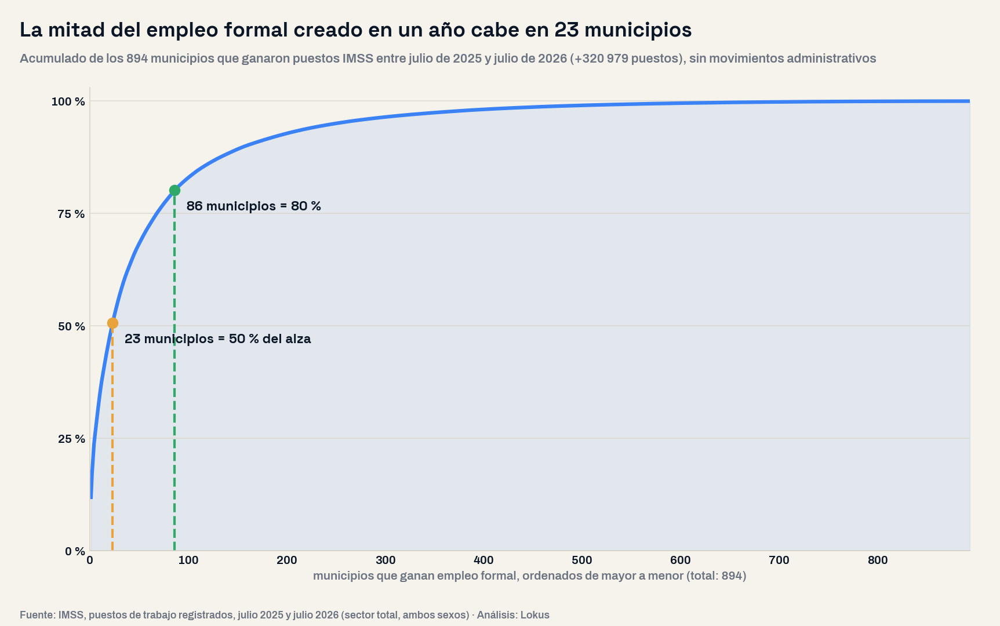
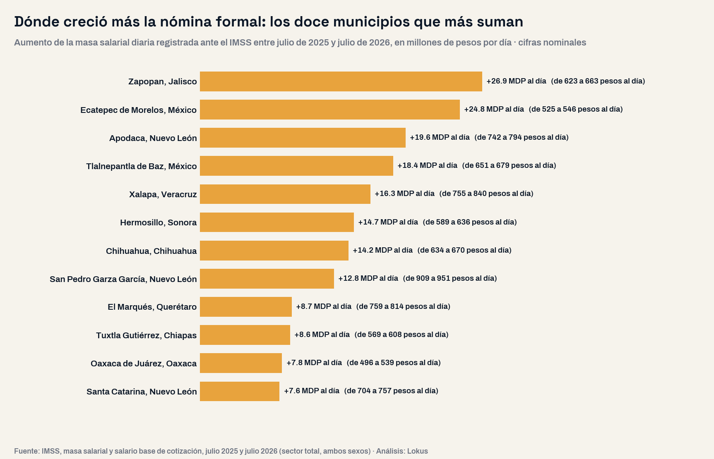

La mitad del empleo formal creado en un año cabe en 23 municipios
De los 894 municipios que ganaron puestos ante el IMSS entre julio de 2025 y julio de 2026, 23 concentran la mitad del alza y 86 el 80%. La nómina formal creció $496 millones de pesos al día en esos mercados y cayó $176 millones en los que se contraen. Y hay un detalle que cambia la lectura: entre los municipios grandes, los que pierden empleo pagan mejor que los que lo ganan.

El panorama: un mercado laboral que crece en pocos lugares
En julio de 2026 el IMSS registró 22,760,154 puestos de trabajo formales en México, 326,987 más que un año antes. Para quien planea expansión, ese número dice poco: lo que importa es dónde aterrizó. Bajamos el dato a los municipios sin preseleccionar región alguna y ordenamos el universo completo por el cambio anual de puestos. El resultado es un mercado partido: de los 2,066 municipios con registro comparable, 950 ganaron empleo formal y 971 lo perdieron.
La lectura de negocio
El empleo formal es el mejor termómetro mensual de un mercado de consumo con ingreso comprobable: son puestos con salario registrado y nómina depositada. Que casi la mitad de los municipios lo esté perdiendo significa que el país promedio no existe como plaza: la expansión se decide municipio por municipio, con la serie de cada uno.
La concentración: 23 municipios, la mitad del crecimiento
Depurando los municipios con movimientos administrativos —volvemos a ellos más abajo— y quedándonos con los que tienen serie mensual completa, el mapa limpio deja 894 municipios que ganan empleo formal y 888 que lo pierden. El alza suma 320,979 puestos, y ahí está el dato que ordena cualquier plan de expansión: 23 municipios concentran la mitad de todo ese crecimiento y 86 concentran el 80%. El resto —más de 800 municipios— se reparte una quinta parte.
Traducido a nómina, que es lo que finalmente se gasta en el territorio: los municipios que ganan empleo sumaron $496 millones de pesos de masa salarial diaria y los que pierden restaron $176 millones. Son cifras nominales, del salario base de cotización, y marcan dónde está entrando dinero nuevo al comercio local cada día.

| Municipio | Puestos jul-2026 | Cambio anual | Variación | Salario base diario | Nómina diaria adicional (MDP) |
|---|---|---|---|---|---|
| Zapopan, Jalisco | 501,656 | +10,713 | 2.2% | $663 | +26.9 |
| Ecatepec de Morelos, México | 222,877 | +38,279 | 20.7% | $546 | +24.8 |
| Apodaca, Nuevo León | 292,734 | +6,188 | 2.2% | $794 | +19.6 |
| Tlalnepantla de Baz, México | 286,692 | +16,155 | 6.0% | $679 | +18.4 |
| Xalapa, Veracruz de Ignacio de la Llave | 163,980 | +2,949 | 1.8% | $840 | +16.3 |
| Hermosillo, Sonora | 266,665 | +3,580 | 1.4% | $636 | +14.7 |
| Chihuahua, Chihuahua | 300,708 | +5,501 | 1.9% | $670 | +14.2 |
| San Pedro Garza García, Nuevo León | 178,430 | +5,981 | 3.5% | $951 | +12.8 |
| El Marqués, Querétaro | 107,861 | +3,703 | 3.6% | $814 | +8.7 |
| Tuxtla Gutiérrez, Chiapas | 133,748 | +5,822 | 4.5% | $608 | +8.6 |
| Oaxaca de Juárez, Oaxaca | 114,313 | +5,998 | 5.5% | $539 | +7.8 |
| Santa Catarina, Nuevo León | 106,987 | +2,697 | 2.6% | $757 | +7.6 |
El empleo que se pierde cuesta más que el que llega
Al separar los 112 municipios con 20 mil puestos o más aparece el hallazgo que no estaba en la pregunta inicial: los 37 que pierden empleo formal pagan un salario base mediano de $653 al día, y los 75 que lo ganan, $588. La diferencia, 11%, describe un recambio en la composición del mercado laboral formal: se contraen plazas de cotización alta y crecen plazas de cotización menor.
| Grupo (municipios de 20 mil puestos o más) | Municipios | Salario base diario mediano | Puestos permanentes (mediana) | Puestos jul-2026 |
|---|---|---|---|---|
| Municipios grandes que ganan empleo | 75 | $588 | 88.0% | 5,958,348 |
| Municipios grandes que pierden empleo | 37 | $653 | 88.9% | 5,192,021 |
Para un plan de expansión, el matiz es operativo: donde el empleo formal crece con salarios menores, el volumen de clientes sube más rápido que el ticket promedio; donde se pierden plazas caras, el número de consumidores cae poco pero el gasto por hogar se resiente antes. Son dos mercados distintos y piden dos estrategias de precio distintas.
Cuidado: el IMSS registra patrones, no centros de trabajo
El dato municipal tiene una trampa que puede arruinar un análisis de mercado: cada puesto se ubica donde está registrado el patrón. Si una empresa grande cambia su registro, un municipio salta miles de puestos en un mes sin que haya contratado a nadie. Revisamos la serie mensual completa de cada municipio y marcamos los movimientos de más de mil puestos que además fueran cinco veces mayores que la volatilidad normal de ese municipio. 107 municipios traen ese tipo de salto y explican 77,873 puestos del saldo municipal: Mexicali sumó 29,144 en un solo mes, Ciudad Valles 17,784 y Omealca pasó de 138 a 8,865.
Antes de mover una decisión de expansión
Pide siempre la serie mensual, no la foto anual. Un municipio que crece 15% en un mes y se queda plano el resto del año no tiene un mercado laboral en expansión: tiene un domicilio fiscal nuevo. Todo el análisis de este artículo excluye esos 107 municipios.
Dónde se contrae el mercado formal
Los 888 municipios que pierden empleo formal no son plazas marginales: concentran 6,419,507 puestos, el 47% del empleo formal municipal del país. Encabezan la caída Juárez (−13,587 puestos), Ensenada (−8,465), Ramos Arizpe (−6,151), Culiacán (−5,938) y Puebla (−5,668). En proporción, el caso más agudo es Tulum, que perdió 3,739 puestos, el 19.1% de su base formal en un año.
La señal más dura para un plan a tres años no es un mal año, sino la racha: 458 municipios perdieron empleo formal dos años seguidos —de julio de 2024 a julio de 2025 y de julio de 2025 a julio de 2026—. Entre los grandes están Juárez (−21,622 puestos en dos años), Culiacán (−15,827), Ramos Arizpe (−9,685), San Luis Potosí (−5,031) y Cuautlancingo (−4,937). Son mercados donde el supuesto de crecimiento del consumo formal debe sustituirse por uno de estabilidad o contracción.
Insights para la acción
- Prioriza por nómina, no por número de empleos. Un municipio que suma 3,000 puestos a $900 diarios mueve más consumo que uno que suma 6,000 a $420. La masa salarial diaria es la métrica que se traduce en ticket.
- Exige dos años de serie antes de firmar una renta. Con 458 municipios en racha negativa, el año cerrado más reciente no basta para dimensionar la demanda.
- Depura los saltos. 107 municipios traen movimientos de registro; leerlos como demanda nueva es el error más caro de este dataset.
- Cruza con la competencia instalada. El empleo formal dice cuánto ingreso comprobable entra; el estudio de mercado y el conteo de unidades económicas dicen cuántos competidores ya se lo están disputando.
- No confundas empleo formal con empleo total. El IMSS cubre el formal privado; en un país con 55.1% de informalidad, el mercado real incluye a los que no aparecen aquí, como mostramos en el mapa del ingreso y la informalidad de las 32 entidades.
Conclusión
El titular mensual del empleo formal describe un país que crece; el mapa municipal describe un mercado que se concentra. 23 municipios se llevan la mitad del empleo nuevo, 888 municipios con casi la mitad del empleo formal del país están en contracción y el puesto que se pierde paga más que el que llega. Para quien decide dónde abrir, contratar o vender, el dato accionable no es la cifra nacional: es la serie mensual del municipio, depurada, y su masa salarial. Se publica cada mes y casi nadie la baja a ese nivel.
Preguntas frecuentes
¿Dónde creció más el empleo formal en México en el último año?
Entre julio de 2025 y julio de 2026, y excluyendo movimientos administrativos, encabezan Ecatepec de Morelos (+38,279 puestos), Tlalnepantla de Baz (+16,155), Zapopan (+10,713), Tepotzotlán (+10,618) y Nezahualcóyotl (+6,626). En nómina diaria, los que más suman son Zapopan, Ecatepec, Apodaca y Tlalnepantla.
¿Qué tan concentrado está el crecimiento del empleo formal?
Mucho: de 894 municipios que ganan puestos, 23 concentran la mitad del alza y 86 el 80%. Los más de 800 restantes se reparten la quinta parte.
¿Los municipios que pierden empleo formal son los de salarios bajos?
Al contrario. Entre los municipios de 20 mil puestos o más, los que pierden empleo tienen un salario base mediano de $653 diarios y los que ganan, $588. Lo que se contrae son plazas de cotización alta.
¿Se puede usar el dato municipal del IMSS para medir un mercado?
Sí, con dos cuidados: es empleo formal privado —no incluye informales, sector público ni ISSSTE— y ubica cada puesto en el municipio donde está registrado el patrón, así que conviene revisar la serie mensual y descartar saltos administrativos antes de leer una tendencia.
Análisis basado en los puestos de trabajo registrados ante el IMSS en julio de 2024, julio de 2025 y julio de 2026 (sector total, ambos sexos; niveles nacional, estatal y municipal), consultados en la capa de datos validada de Lokus. Universo completo: los 2,066 municipios con registro comparable entre julio de 2025 y julio de 2026, sin preselección; de ellos 2,026 tienen la serie mensual completa de los trece meses, base de la depuración, y 1,910 tienen registro en julio de 2024. Comparación julio contra julio para neutralizar la estacionalidad de los puestos eventuales. Depuración de movimientos administrativos: se marcó el municipio cuando algún mes registró un cambio de al menos 1,000 puestos y a la vez cinco veces mayor que su volatilidad mensual mediana, excluyendo las transiciones de diciembre y enero; 107 municipios quedaron fuera del análisis. Definiciones: puestos de trabajo = puestos registrados, no personas; salario base de cotización y masa salarial en pesos nominales, sin deflactar. El IMSS registra empleo formal privado y ubica cada puesto en el municipio de registro del patrón: no es el empleo total de un municipio. La Ciudad de México no se desagrega por alcaldía, por lo que sus 119,136 puestos adicionales aparecen en el dato nacional y no en el municipal. Las medianas de salario se calculan sobre los 112 municipios con 20 mil puestos o más del universo depurado. Fecha de análisis: 15 de septiembre de 2026. Para dimensionar el mercado, la competencia y el perfil laboral de cualquier estado o municipio con datos oficiales integrados, visita lokusdata.com